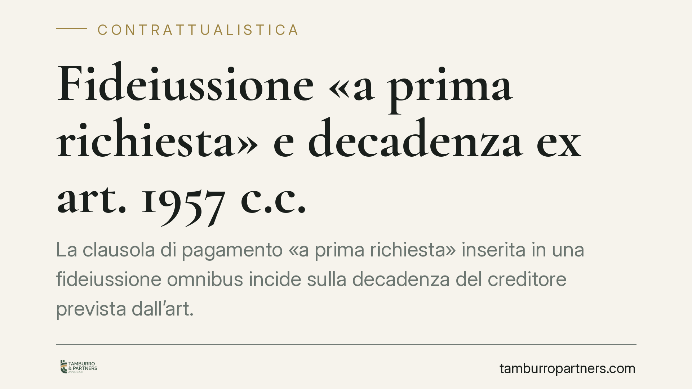

Fideiussione «a prima richiesta» e decadenza ex art. 1957 c.c.
La clausola di pagamento «a prima richiesta» inserita in una fideiussione omnibus incide sulla decadenza del creditore prevista dall'art. 1957 c.c.? Il tema torna al centro del dibattito perché tocca la sorte concreta della garanzia. Distinguere il «modo» dell'escussione dal presupposto della decadenza è essenziale per creditori e garanti.

Il nodo interpretativo
La questione riguarda il rapporto tra due elementi che spesso convivono nella prassi bancaria: la clausola che impone il pagamento «a prima richiesta» e senza eccezioni, e il termine di decadenza posto a carico del creditore dall'art. 1957 c.c.
Il punto è capire se la presenza della prima clausola escluda automaticamente l'operatività della seconda. La risposta non è scontata e dipende da come si qualifica il rapporto di garanzia.
Inquadramento normativo
L'art. 1957 c.c. stabilisce che il fideiussore resta obbligato anche dopo la scadenza dell'obbligazione principale, purché il creditore, entro sei mesi, abbia proposto le sue istanze contro il debitore e le abbia con diligenza continuate. In difetto, il creditore decade dalla garanzia.
È una norma di tutela del garante: evita che questi resti indefinitamente esposto per l'inerzia del creditore verso il debitore principale.
Sul piano sistematico occorre richiamare l'orientamento delle Sezioni Unite (Cass. SU 18 febbraio 2010, n. 3947), che ha tracciato la distinzione tra fideiussione e contratto autonomo di garanzia. Nel contratto autonomo, la presenza della clausola «a prima richiesta e senza eccezioni» segnala di regola l'intento di sganciare la garanzia dal rapporto principale: il garante paga e solo dopo agisce in ripetizione. In quel modello, molte eccezioni derivate dal rapporto garantito — inclusa, secondo un indirizzo diffuso, quella ex art. 1957 c.c. — restano precluse.
Diverso è il caso in cui la clausola «a prima richiesta» si innesti su una fideiussione che resta accessoria all'obbligazione principale. Qui la clausola incide sul «modo» dell'escussione — cioè sulla tempestività e sull'ordine del pagamento — ma non trasforma la natura del rapporto. In questa lettura, la decadenza ex art. 1957 c.c. può continuare a operare, salvo una deroga espressa e inequivoca.
Le implicazioni pratiche
La distinzione ha conseguenze concrete opposte per le due parti.
Per il creditore (tipicamente la banca), affidarsi alla sola clausola «a prima richiesta» non garantisce di essere al riparo dalla decadenza. Se il rapporto è qualificato come fideiussione accessoria e manca una rinuncia chiara all'art. 1957 c.c., l'inerzia nel proporre e proseguire le istanze contro il debitore principale entro i sei mesi può far perdere la garanzia.
Per il garante/fideiussore, la stessa incertezza rappresenta un margine difensivo. Anche in presenza di una clausola apparentemente «blindata», l'eccezione di decadenza può risultare fondata quando manchi una deroga espressa e la garanzia conservi natura accessoria.
Il discrimine, dunque, non sta nell'etichetta del contratto ma nel contenuto complessivo delle clausole: occorre valutare se le parti abbiano voluto un'obbligazione autonoma oppure una fideiussione con modalità di escussione agevolate.
Cosa fare in concreto
- Qualifica il rapporto: verifica se il testo configura un contratto autonomo di garanzia o una fideiussione accessoria, guardando all'insieme delle clausole e non alla sola dicitura «a prima richiesta».
- Cerca la deroga espressa: individua se esiste una rinuncia specifica e inequivoca all'art. 1957 c.c.; in mancanza, il termine di sei mesi resta un presupposto rilevante.
- Presidia i termini (creditore): annota la scadenza dell'obbligazione principale e attiva tempestivamente le istanze verso il debitore, curandone la prosecuzione con diligenza.
- Valuta l'eccezione (garante): l'eccezione di decadenza va sollevata nei modi e nei termini corretti; è opportuna una verifica tecnica del testo contrattuale e della cronologia delle iniziative del creditore.
- Documenta gli atti: conserva prova delle istanze proposte e proseguite, poiché su questi elementi si gioca l'accertamento della decadenza.
Un tema in evoluzione
La materia resta attraversata da orientamenti non del tutto sovrapponibili, proprio perché la linea di confine tra garanzia autonoma e fideiussione accessoria è mobile e dipende dalla concreta redazione delle clausole. Ogni pronuncia che affina questa distinzione ha ricadute immediate sulla gestione del contenzioso bancario e sulla predisposizione dei testi contrattuali.
_Contributo informativo a cura di Tamburro & Partners Avvocati. Non costituisce parere legale._
Ogni contratto ha il suo equilibrio.
Se vuoi una revisione delle clausole o una redazione su misura, scrivi allo studio. Ti rispondiamo entro un giorno lavorativo.